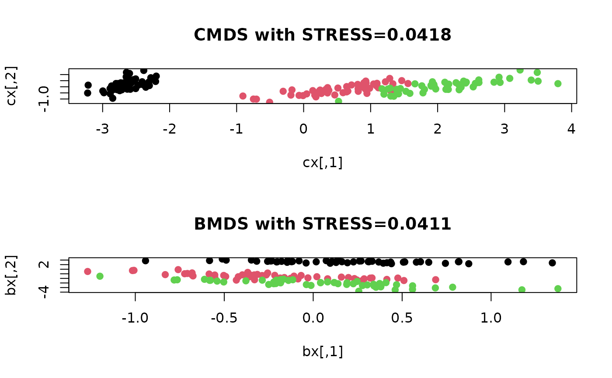

A Bayesian formulation of classical Multidimensional Scaling is presented.
Even though this method is based on MCMC sampling, we only return maximum a posterior (MAP) estimate
that maximizes the posterior distribution. Due to its nature without any special tuning,
increasing mc.iter requires much computation.
bmds(
data,
ndim = 2,
par.a = 5,
par.alpha = 0.5,
par.step = 1,
mc.iter = 8128,
verbose = TRUE
)an \((n\times p)\) matrix whose rows are observations.
an integer-valued target dimension.
hyperparameter for conjugate prior on variance term, i.e., \(\sigma^2 \sim IG(a,b)\). Note that \(b\) is chosen appropriately as in paper.
hyperparameter for conjugate prior on diagonal term, i.e., \(\lambda_j \sim IG(\alpha, \beta_j)\). Note that \(\beta_j\) is chosen appropriately as in paper.
stepsize for random-walk, which is standard deviation of Gaussian proposal.
the number of MCMC iterations.
a logical; TRUE to show iterations, FALSE otherwise.
a named list containing
an \((n\times ndim)\) matrix whose rows are embedded observations.
discrepancy between embedded and origianl data as a measure of error.
Oh M, Raftery AE (2001). “Bayesian Multidimensional Scaling and Choice of Dimension.” Journal of the American Statistical Association, 96(455), 1031--1044.
# \donttest{
## use simple example of iris dataset
data(iris)
idata = as.matrix(iris[,1:4])
## run Bayesian MDS
# let's run 10 iterations only.
iris.cmds = cmds(idata, ndim=2)
iris.bmds = bmds(idata, ndim=2, mc.iter=5, par.step=(2.38^2))
#> ** bmds : iteration 1/5 complete.
#> ** bmds : iteration 2/5 complete.
#> ** bmds : iteration 3/5 complete.
#> ** bmds : iteration 4/5 complete.
#> ** bmds : iteration 5/5 complete.
## extract coordinates and class information
cx = iris.cmds$embed # embedded coordinates of CMDS
bx = iris.bmds$embed # BMDS
icol = iris[,5] # class information
## visualize
opar <- par(no.readonly=TRUE)
par(mfrow=c(2,1))
mc = paste0("CMDS with STRESS=",round(iris.cmds$stress,4))
mb = paste0("BMDS with STRESS=",round(iris.bmds$stress,4))
plot(cx, col=icol,pch=19,main=mc)
plot(bx, col=icol,pch=19,main=mb)

par(opar)
# }